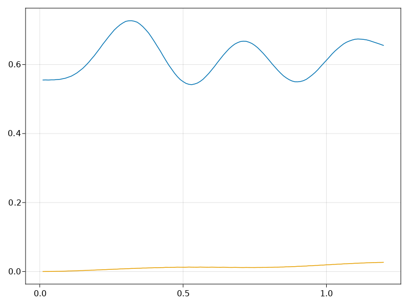

using EaRyd
using RandomIn this example, we use the Rydberg Emulator to simulate and evolve a fully coherent, strongly interacting system of 9 qubits to observe emergent oscillations in many-body dynamics afer a sudden quench to single-atom resonance. We demonstrate the many-body dynamics with measurements of the domain wall density, which signals the appearance and disappearance of crystalline states.
We start by building the 1D-Chain 10-atom arrangement, with each atom separated from its neighbor by 5.72 micrometers We evaluate the quench dynamics of the Rydberg atom array initially prepared in a product state as the detuning changes to single atom resonance After the quence, we observe oscillations of many-body states between the initial and inverted states.
Random.seed!(42)Random.TaskLocalRNG()build lattice structure
nsites = 10
atoms = generate_sites(ChainLattice(), nsites, scale=5.72)construct Rydberg Hamiltonian with specified Rabi frequency
h = rydberg_h(atoms;C = 2π * 858386, Ω=4π)Hamiltonian
Term 1
∑(n=1:10) 12.6/2 σ^x
Term 2
∑(n=1:10) 5.39e6/|r_i - r_j|^6 n_i n_jconstruct initial product state
config = rand(0:1, 10)
init = product_state(config)ArrayReg{1, ComplexF64, Array...}
active qubits: 10/10perform discrete time evolution given timestep ts = 0.01 for 120 iterations using Krylov
iteration = 1:120
ts = [0.01 for _ in iteration];
hs = [h for _ in iteration];
prob = KrylovEvolution(init, ts, hs)KrylovEvolution{Float64}:
reg: ArrayReg{1, ComplexF64, Matrix{ComplexF64}}
reg storage: 16.000 KiB
total duration: 1.2000000000000002 μs
hamiltonian:
Hamiltonian
Term 1
∑(n=1:10) 12.6/2 σ^x
Term 2
∑(n=1:10) 5.39e6/|r_i - r_j|^6 n_i n_j
⋮
Hamiltonian
Term 1
∑(n=1:10) 12.6/2 σ^x
Term 2
∑(n=1:10) 5.39e6/|r_i - r_j|^6 n_i n_j
hamiltonian storage: 135.875 KiB
options:
progress: false
progress_step: 1
progress_name: "emulating"
normalize_step: 5
normalize_finally: truemeasure observable
clocks = cumsum(ts)120-element Vector{Float64}:
0.01
0.02
0.03
0.04
0.05
0.060000000000000005
0.07
0.08
0.09
0.09999999999999999
0.10999999999999999
0.11999999999999998
0.12999999999999998
0.13999999999999999
0.15
0.16
0.17
0.18000000000000002
0.19000000000000003
0.20000000000000004
0.21000000000000005
0.22000000000000006
0.23000000000000007
0.24000000000000007
0.25000000000000006
0.26000000000000006
0.2700000000000001
0.2800000000000001
0.2900000000000001
0.3000000000000001
0.3100000000000001
0.3200000000000001
0.3300000000000001
0.34000000000000014
0.35000000000000014
0.36000000000000015
0.37000000000000016
0.38000000000000017
0.3900000000000002
0.4000000000000002
0.4100000000000002
0.4200000000000002
0.4300000000000002
0.4400000000000002
0.45000000000000023
0.46000000000000024
0.47000000000000025
0.48000000000000026
0.49000000000000027
0.5000000000000002
0.5100000000000002
0.5200000000000002
0.5300000000000002
0.5400000000000003
0.5500000000000003
0.5600000000000003
0.5700000000000003
0.5800000000000003
0.5900000000000003
0.6000000000000003
0.6100000000000003
0.6200000000000003
0.6300000000000003
0.6400000000000003
0.6500000000000004
0.6600000000000004
0.6700000000000004
0.6800000000000004
0.6900000000000004
0.7000000000000004
0.7100000000000004
0.7200000000000004
0.7300000000000004
0.7400000000000004
0.7500000000000004
0.7600000000000005
0.7700000000000005
0.7800000000000005
0.7900000000000005
0.8000000000000005
0.8100000000000005
0.8200000000000005
0.8300000000000005
0.8400000000000005
0.8500000000000005
0.8600000000000005
0.8700000000000006
0.8800000000000006
0.8900000000000006
0.9000000000000006
0.9100000000000006
0.9200000000000006
0.9300000000000006
0.9400000000000006
0.9500000000000006
0.9600000000000006
0.9700000000000006
0.9800000000000006
0.9900000000000007
1.0000000000000007
1.0100000000000007
1.0200000000000007
1.0300000000000007
1.0400000000000007
1.0500000000000007
1.0600000000000007
1.0700000000000007
1.0800000000000007
1.0900000000000007
1.1000000000000008
1.1100000000000008
1.1200000000000008
1.1300000000000008
1.1400000000000008
1.1500000000000008
1.1600000000000008
1.1700000000000008
1.1800000000000008
1.1900000000000008
1.2000000000000008create empty lists of output expectation values
entropy = zeros(length(iteration)) # entanglement entropy
domain_mat = zeros(nsites-1, length(iteration)) # domain wall number
density_mat = zeros(nsites, length(iteration)) # density matrix
for info in prob
for i in 1:nsites
density_mat[i, info.step] = expect(put(nsites, i=>Op.n), info.reg)
end
for i in 1:nsites-1
corr = real(expect(put(nsites, (i, i+1)=>kron(Op.n, Op.n)), info.reg))
obs = density_mat[i, info.step] + density_mat[i+1, info.step] - 2corr
domain_mat[i, info.step] = obs
end
rho = density_matrix(info.reg, (1,2,3,4,5))
entropy[info.step] = von_neumann_entropy(rho)
endPlot results
using CairoMakie
fig = Figure(size=(10, 5));
ax = Axis(fig[1, 1])
for i in 1:nsites
lines!(clocks, density_mat[i, :])
end
fig
heatmap(clocks, 1:nsites, density_mat')
heatmap(clocks, 1:nsites, domain_mat')
domain_avg = vec(sum(domain_mat, dims=1)/(nsites-1))
fig = Figure()
ax = Axis(fig[1, 1])
lines!(ax, clocks, domain_avg)
lines!(ax, clocks, entropy)
fig
TODO: subspace
This page was generated using Literate.jl.